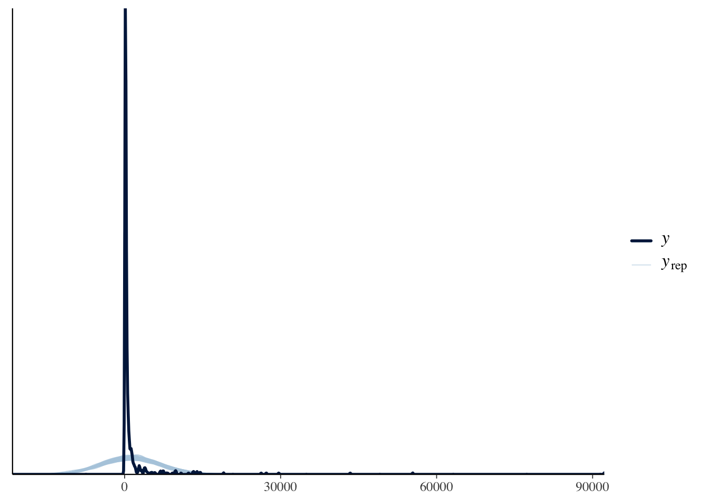
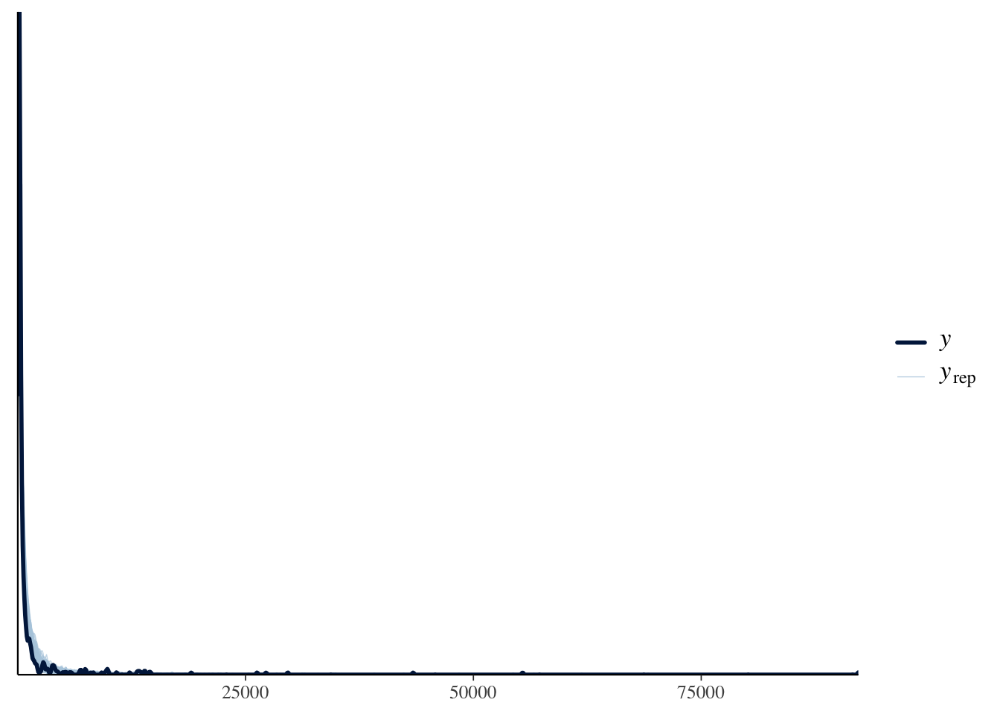

library(rstan)
library(tidyverse)
library(brms)
library(tidybayes)mixture-tutorial
Overview
This is following this tutorial on fitting log-Gaussian mixed-effects mixture models to get familiar with the syntax in stan and brms.
Prepare data
# Load data
data <- read_csv("https://osf.io/tjms9/download")Rows: 600 Columns: 3
── Column specification ────────────────────────────────────────────────────────
Delimiter: ","
chr (1): location
dbl (2): participant, iki
ℹ Use `spec()` to retrieve the full column specification for this data.
ℹ Specify the column types or set `show_col_types = FALSE` to quiet this message.head(data)Mixed Effects Models
Note that this is just looking at mixed effects1 and NOT mixture models, there is NO mixture yet.
1 i.e., fixed effects + random effects
Gaussian Mixed Effects Models
Here’s the math model:
\[ \begin{align} \text{iki}_i &\sim \mathcal{N}(\mu_i, \sigma_e^2) \\ \mu_i &= \beta_{\text{location}[i]} + \mu_{\text{participant}[i]} \\ \mu_{\text{participant}[i]} &\sim \mathcal{N}(0, \sigma_p^2) \end{align} \]
Corresponding brms formula:
formula <- bf(iki ~ 0 + location + (1 | participant),
family = gaussian())
get_prior(formula = formula, data = data)The priors with class value b are those corresponding to \(\beta_{\text{location}[i]}\). The default versions have them defined to be flat but we could redefine them to be weakly informative using student \(t\):
prior <- set_prior('student_t(3, 350, 75)', class = 'b')Fitting the model
fit_gaus <- brm(formula = formula,
data = data,
prior = prior,
chains = 4,
cores = 4,
iter = 10000,
warmup = 5000,
sample_prior = TRUE,
init = 0,
seed = 365,
file = "models/fit_gaus")Let’s see what the fitted model looks like:
summary(fit_gaus)Warning: There were 3 divergent transitions after warmup. Increasing
adapt_delta above 0.8 may help. See
http://mc-stan.org/misc/warnings.html#divergent-transitions-after-warmup Family: gaussian
Links: mu = identity; sigma = identity
Formula: iki ~ 0 + location + (1 | participant)
Data: data (Number of observations: 600)
Draws: 4 chains, each with iter = 10000; warmup = 5000; thin = 1;
total post-warmup draws = 20000
Multilevel Hyperparameters:
~participant (Number of levels: 10)
Estimate Est.Error l-95% CI u-95% CI Rhat Bulk_ESS Tail_ESS
sd(Intercept) 371.91 280.64 13.20 1032.64 1.00 6971 8809
Regression Coefficients:
Estimate Est.Error l-95% CI u-95% CI Rhat Bulk_ESS
locationbeforeMsentence 2838.67 429.50 1986.30 3657.27 1.00 18495
locationbeforeMword 373.79 105.36 183.38 613.12 1.00 19927
locationwithinMword 346.46 102.55 131.34 553.74 1.00 21458
Tail_ESS
locationbeforeMsentence 10638
locationbeforeMword 8700
locationwithinMword 9259
Further Distributional Parameters:
Estimate Est.Error l-95% CI u-95% CI Rhat Bulk_ESS Tail_ESS
sigma 5349.34 156.08 5051.48 5665.43 1.00 23502 13519
Draws were sampled using sampling(NUTS). For each parameter, Bulk_ESS
and Tail_ESS are effective sample size measures, and Rhat is the potential
scale reduction factor on split chains (at convergence, Rhat = 1).pp_check(fit_gaus, ndraws = 100)
As can be seen from the pp_check the fit is pretty bad …
fixef(fit_gaus) Estimate Est.Error Q2.5 Q97.5
locationbeforeMsentence 2838.6741 429.5031 1986.2997 3657.2727
locationbeforeMword 373.7934 105.3625 183.3783 613.1211
locationwithinMword 346.4606 102.5485 131.3443 553.7408Log-Gaussian mixed-effects model
Here’s the math model2:
2 the different is that in the previous model, we assumed that \(\text{iki}_i \sim \mathcal{N}(\mu_i, \sigma_e^2)\)
\[ \begin{align} \text{iki}_i &\sim \text{log-normal}(\mu_i, \sigma_e^2) \\ \mu_i &= \beta_{\text{location}[i]} + \mu_{\text{participant}[i]} \\ \mu_{\text{participant}[i]} &\sim \mathcal{N}(0, \sigma_p^2) \end{align} \]
And the corresponding brms formula:
formula <- bf(iki ~ 0 + location + (1 | participant),
family = lognormal())
# set prior in the same way as before, except this time paying attention to log-normal
prior <- set_prior('student_t(3, 5.85, .5)', class = 'b')Fitting the model
fit_lgaus <- brm(formula = formula,
data = data,
prior = prior,
chains = 4,
cores = 4,
iter = 10000,
warmup = 5000,
sample_prior = TRUE,
init = 0,
seed = 365,
file = "models/fit_lgaus")Check the fitted results:
summary(fit_lgaus) Family: lognormal
Links: mu = identity; sigma = identity
Formula: iki ~ 0 + location + (1 | participant)
Data: data (Number of observations: 600)
Draws: 4 chains, each with iter = 10000; warmup = 5000; thin = 1;
total post-warmup draws = 20000
Multilevel Hyperparameters:
~participant (Number of levels: 10)
Estimate Est.Error l-95% CI u-95% CI Rhat Bulk_ESS Tail_ESS
sd(Intercept) 0.18 0.09 0.02 0.39 1.00 4663 5075
Regression Coefficients:
Estimate Est.Error l-95% CI u-95% CI Rhat Bulk_ESS
locationbeforeMsentence 6.56 0.10 6.36 6.76 1.00 12128
locationbeforeMword 5.83 0.10 5.64 6.03 1.00 12068
locationwithinMword 5.13 0.10 4.92 5.33 1.00 11280
Tail_ESS
locationbeforeMsentence 9939
locationbeforeMword 10704
locationwithinMword 10479
Further Distributional Parameters:
Estimate Est.Error l-95% CI u-95% CI Rhat Bulk_ESS Tail_ESS
sigma 1.15 0.03 1.09 1.22 1.00 24792 13445
Draws were sampled using sampling(NUTS). For each parameter, Bulk_ESS
and Tail_ESS are effective sample size measures, and Rhat is the potential
scale reduction factor on split chains (at convergence, Rhat = 1).pp_check(fit_lgaus, ndraws = 100)
This has a much nicer posterior fit compared to the Gaussian model. Let’s also check the inferred posterior estimates:
fixef(fit_lgaus) Estimate Est.Error Q2.5 Q97.5
locationbeforeMsentence 6.558556 0.1009988 6.360289 6.759738
locationbeforeMword 5.833627 0.1000829 5.637917 6.031284
locationwithinMword 5.127331 0.1019917 4.924162 5.331545Note that these are in log space, so to view the actual estimates we need to view them in exp space.
fixef(fit_lgaus) %>% exp() Estimate Est.Error Q2.5 Q97.5
locationbeforeMsentence 705.2527 1.106275 578.4136 862.4164
locationbeforeMword 341.5955 1.105263 280.8771 416.2493
locationwithinMword 168.5667 1.107374 137.5740 206.7571